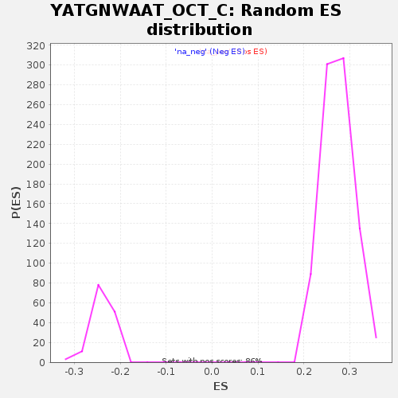

| | | Dataset | GSE18198_cov_collapsed |
| Phenotype | NoPhenotypeAvailable |
| Upregulated in class | na_pos |
| GeneSet | YATGNWAAT_OCT_C |
| Enrichment Score (ES) | 0.44724092 |
| Normalized Enrichment Score (NES) | 1.6333473 |
| Nominal p-value | 0.0 |
| FDR q-value | 0.060730956 |
| FWER p-Value | 0.397 |
Table: GSEA Results Summary
 Fig 1: Enrichment plot: YATGNWAAT_OCT_C
Fig 1: Enrichment plot: YATGNWAAT_OCT_C
Profile of the Running ES Score & Positions of GeneSet Members on the Rank Ordered List
| SYMBOL | TITLE | RANK IN GENE LIST | RANK METRIC SCORE | RUNNING ES | CORE ENRICHMENT | | 1 | H2AC6 | NA | 8 | 2.558 | 0.0214 | Yes |
| 2 | TRPS1 | NA | 63 | 1.922 | 0.0351 | Yes |
| 3 | JUND | NA | 81 | 1.813 | 0.0497 | Yes |
| 4 | ALDH1A2 | NA | 157 | 1.523 | 0.0590 | Yes |
| 5 | CADM1 | NA | 187 | 1.432 | 0.0698 | Yes |
| 6 | SORBS1 | NA | 230 | 1.347 | 0.0792 | Yes |
| 7 | LINC00470 | NA | 233 | 1.345 | 0.0905 | Yes |
| 8 | ATF7IP | NA | 245 | 1.324 | 0.1013 | Yes |
| 9 | UBE2S | NA | 303 | 1.239 | 0.1090 | Yes |
| 10 | NRXN3 | NA | 320 | 1.216 | 0.1186 | Yes |
| 11 | DLGAP4 | NA | 338 | 1.200 | 0.1280 | Yes |
| 12 | NR4A3 | NA | 373 | 1.170 | 0.1363 | Yes |
| 13 | SEPTIN9 | NA | 430 | 1.116 | 0.1431 | Yes |
| 14 | TSPAN13 | NA | 453 | 1.096 | 0.1513 | Yes |
| 15 | HOXC11 | NA | 466 | 1.082 | 0.1599 | Yes |
| 16 | DNAH5 | NA | 469 | 1.081 | 0.1690 | Yes |
| 17 | NEIL3 | NA | 529 | 1.026 | 0.1749 | Yes |
| 18 | ITGB3BP | NA | 599 | 0.986 | 0.1799 | Yes |
| 19 | TCF4 | NA | 602 | 0.986 | 0.1882 | Yes |
| 20 | ADORA2A | NA | 624 | 0.964 | 0.1954 | Yes |
| 21 | HIVEP3 | NA | 688 | 0.924 | 0.2002 | Yes |
| 22 | PTEN | NA | 734 | 0.907 | 0.2057 | Yes |
| 23 | ARHGEF12 | NA | 762 | 0.893 | 0.2120 | Yes |
| 24 | SCOC | NA | 766 | 0.891 | 0.2195 | Yes |
| 25 | NUDT6 | NA | 795 | 0.876 | 0.2255 | Yes |
| 26 | BCOR | NA | 824 | 0.864 | 0.2315 | Yes |
| 27 | CADM2 | NA | 826 | 0.864 | 0.2388 | Yes |
| 28 | ING1 | NA | 837 | 0.860 | 0.2457 | Yes |
| 29 | SH3GL3 | NA | 851 | 0.852 | 0.2523 | Yes |
| 30 | EPHB3 | NA | 873 | 0.846 | 0.2585 | Yes |
| 31 | HDAC9 | NA | 953 | 0.817 | 0.2616 | Yes |
| 32 | H2BC12 | NA | 969 | 0.812 | 0.2678 | Yes |
| 33 | ERG | NA | 976 | 0.810 | 0.2744 | Yes |
| 34 | FZD4 | NA | 986 | 0.805 | 0.2808 | Yes |
| 35 | LYRM1 | NA | 995 | 0.803 | 0.2872 | Yes |
| 36 | RRAS | NA | 1004 | 0.800 | 0.2936 | Yes |
| 37 | LIPG | NA | 1006 | 0.800 | 0.3004 | Yes |
| 38 | PIWIL4 | NA | 1105 | 0.765 | 0.3021 | Yes |
| 39 | LRCH4 | NA | 1211 | 0.729 | 0.3032 | Yes |
| 40 | SERTAD4 | NA | 1293 | 0.706 | 0.3053 | Yes |
| 41 | MSI2 | NA | 1346 | 0.693 | 0.3087 | Yes |
| 42 | GDNF | NA | 1347 | 0.692 | 0.3146 | Yes |
| 43 | CACNG2 | NA | 1396 | 0.675 | 0.3180 | Yes |
| 44 | DUSP10 | NA | 1427 | 0.666 | 0.3222 | Yes |
| 45 | PRICKLE2 | NA | 1434 | 0.664 | 0.3275 | Yes |
| 46 | CCDC122 | NA | 1464 | 0.659 | 0.3318 | Yes |
| 47 | MID1 | NA | 1638 | 0.624 | 0.3287 | Yes |
| 48 | PAX6 | NA | 1668 | 0.617 | 0.3325 | Yes |
| 49 | ETV1 | NA | 1721 | 0.606 | 0.3351 | Yes |
| 50 | NOS1 | NA | 1772 | 0.594 | 0.3378 | Yes |
| 51 | DNAH7 | NA | 1833 | 0.583 | 0.3398 | Yes |
| 52 | CSRNP3 | NA | 1835 | 0.583 | 0.3447 | Yes |
| 53 | GPR85 | NA | 1898 | 0.572 | 0.3466 | Yes |
| 54 | REL | NA | 1981 | 0.559 | 0.3473 | Yes |
| 55 | WNT6 | NA | 2014 | 0.554 | 0.3505 | Yes |
| 56 | PDZD2 | NA | 2022 | 0.553 | 0.3548 | Yes |
| 57 | KANSL1L | NA | 2036 | 0.551 | 0.3589 | Yes |
| 58 | BCORP1 | NA | 2053 | 0.549 | 0.3628 | Yes |
| 59 | STMN1 | NA | 2066 | 0.547 | 0.3669 | Yes |
| 60 | DCN | NA | 2068 | 0.546 | 0.3715 | Yes |
| 61 | CBFA2T2 | NA | 2090 | 0.543 | 0.3751 | Yes |
| 62 | MAF | NA | 2201 | 0.531 | 0.3742 | Yes |
| 63 | LDB2 | NA | 2227 | 0.528 | 0.3775 | Yes |
| 64 | FOXP1 | NA | 2232 | 0.527 | 0.3818 | Yes |
| 65 | SLC10A2 | NA | 2356 | 0.510 | 0.3802 | Yes |
| 66 | RXFP1 | NA | 2362 | 0.509 | 0.3843 | Yes |
| 67 | HNF1B | NA | 2471 | 0.495 | 0.3832 | Yes |
| 68 | HOXA3 | NA | 2509 | 0.491 | 0.3856 | Yes |
| 69 | PDZK1IP1 | NA | 2637 | 0.474 | 0.3835 | Yes |
| 70 | ID2 | NA | 2668 | 0.469 | 0.3860 | Yes |
| 71 | MCC | NA | 2669 | 0.469 | 0.3900 | Yes |
| 72 | MAP1B | NA | 2699 | 0.466 | 0.3926 | Yes |
| 73 | C12orf57 | NA | 2730 | 0.463 | 0.3950 | Yes |
| 74 | SCAF4 | NA | 2740 | 0.462 | 0.3985 | Yes |
| 75 | H2BC4 | NA | 2757 | 0.460 | 0.4017 | Yes |
| 76 | CRISP1 | NA | 2778 | 0.458 | 0.4046 | Yes |
| 77 | SOX5 | NA | 2804 | 0.454 | 0.4072 | Yes |
| 78 | H2BC3 | NA | 2828 | 0.452 | 0.4100 | Yes |
| 79 | KCNIP4 | NA | 2923 | 0.443 | 0.4092 | Yes |
| 80 | POU2F3 | NA | 2941 | 0.442 | 0.4121 | Yes |
| 81 | MBNL2 | NA | 2988 | 0.439 | 0.4136 | Yes |
| 82 | DGKG | NA | 3004 | 0.437 | 0.4166 | Yes |
| 83 | C21orf62 | NA | 3012 | 0.437 | 0.4200 | Yes |
| 84 | NR6A1 | NA | 3045 | 0.433 | 0.4221 | Yes |
| 85 | SESN3 | NA | 3070 | 0.430 | 0.4246 | Yes |
| 86 | CCDC80 | NA | 3089 | 0.427 | 0.4273 | Yes |
| 87 | PPP2R3A | NA | 3307 | 0.404 | 0.4202 | Yes |
| 88 | NPR3 | NA | 3352 | 0.400 | 0.4215 | Yes |
| 89 | PLPPR2 | NA | 3410 | 0.394 | 0.4221 | Yes |
| 90 | FZD2 | NA | 3424 | 0.392 | 0.4248 | Yes |
| 91 | RHOB | NA | 3445 | 0.390 | 0.4271 | Yes |
| 92 | SP6 | NA | 3450 | 0.389 | 0.4303 | Yes |
| 93 | IRX4 | NA | 3493 | 0.385 | 0.4315 | Yes |
| 94 | SLC6A15 | NA | 3502 | 0.384 | 0.4344 | Yes |
| 95 | ZFX | NA | 3710 | 0.367 | 0.4275 | Yes |
| 96 | CDK14 | NA | 3786 | 0.363 | 0.4269 | Yes |
| 97 | LPL | NA | 3851 | 0.357 | 0.4268 | Yes |
| 98 | TP53INP2 | NA | 3877 | 0.356 | 0.4286 | Yes |
| 99 | LETM2 | NA | 4038 | 0.339 | 0.4237 | Yes |
| 100 | PHC2 | NA | 4065 | 0.337 | 0.4254 | Yes |
| 101 | HOXA10 | NA | 4097 | 0.335 | 0.4267 | Yes |
| 102 | XYLT2 | NA | 4138 | 0.332 | 0.4276 | Yes |
| 103 | NFIA | NA | 4158 | 0.330 | 0.4295 | Yes |
| 104 | LLGL2 | NA | 4173 | 0.329 | 0.4316 | Yes |
| 105 | GNB3 | NA | 4224 | 0.325 | 0.4319 | Yes |
| 106 | FGF12 | NA | 4253 | 0.323 | 0.4333 | Yes |
| 107 | NUDT3 | NA | 4292 | 0.319 | 0.4342 | Yes |
| 108 | LCOR | NA | 4307 | 0.318 | 0.4362 | Yes |
| 109 | ZFY | NA | 4333 | 0.317 | 0.4377 | Yes |
| 110 | TSNAX | NA | 4354 | 0.315 | 0.4394 | Yes |
| 111 | ANK3 | NA | 4479 | 0.306 | 0.4360 | Yes |
| 112 | GPR22 | NA | 4519 | 0.303 | 0.4366 | Yes |
| 113 | SFRP1 | NA | 4642 | 0.294 | 0.4332 | Yes |
| 114 | SIAH3 | NA | 4644 | 0.294 | 0.4357 | Yes |
| 115 | RCAN1 | NA | 4674 | 0.292 | 0.4368 | Yes |
| 116 | RAB3C | NA | 4679 | 0.292 | 0.4390 | Yes |
| 117 | CACFD1 | NA | 4729 | 0.289 | 0.4391 | Yes |
| 118 | ESRRA | NA | 4748 | 0.288 | 0.4407 | Yes |
| 119 | RAB5A | NA | 4836 | 0.282 | 0.4389 | Yes |
| 120 | DLL3 | NA | 4861 | 0.280 | 0.4401 | Yes |
| 121 | TAS2R7 | NA | 4863 | 0.280 | 0.4424 | Yes |
| 122 | GRIN3A | NA | 4905 | 0.276 | 0.4428 | Yes |
| 123 | CCND1 | NA | 4927 | 0.275 | 0.4441 | Yes |
| 124 | RAB6C | NA | 4931 | 0.274 | 0.4463 | Yes |
| 125 | H2BC21 | NA | 4960 | 0.272 | 0.4472 | Yes |
| 126 | CNOT2 | NA | 5032 | 0.269 | 0.4461 | No |
| 127 | PRRX1 | NA | 5061 | 0.267 | 0.4470 | No |
| 128 | HOXA7 | NA | 5174 | 0.260 | 0.4438 | No |
| 129 | ITSN1 | NA | 5184 | 0.260 | 0.4455 | No |
| 130 | NRXN1 | NA | 5313 | 0.253 | 0.4415 | No |
| 131 | SALL3 | NA | 5351 | 0.251 | 0.4418 | No |
| 132 | FOXN1 | NA | 5354 | 0.251 | 0.4439 | No |
| 133 | DLL4 | NA | 5372 | 0.250 | 0.4452 | No |
| 134 | PIPOX | NA | 5430 | 0.247 | 0.4445 | No |
| 135 | DLL1 | NA | 5593 | 0.238 | 0.4386 | No |
| 136 | RFTN2 | NA | 5688 | 0.233 | 0.4361 | No |
| 137 | ALK | NA | 5724 | 0.231 | 0.4363 | No |
| 138 | HOXB6 | NA | 6038 | 0.215 | 0.4230 | No |
| 139 | ENAM | NA | 6109 | 0.211 | 0.4213 | No |
| 140 | SLC24A3 | NA | 6161 | 0.208 | 0.4206 | No |
| 141 | ZHX2 | NA | 6176 | 0.208 | 0.4217 | No |
| 142 | HPCAL4 | NA | 6205 | 0.207 | 0.4221 | No |
| 143 | UQCC2 | NA | 6269 | 0.203 | 0.4208 | No |
| 144 | TTI2 | NA | 6283 | 0.203 | 0.4219 | No |
| 145 | COL25A1 | NA | 6335 | 0.200 | 0.4211 | No |
| 146 | PDZRN4 | NA | 6336 | 0.200 | 0.4228 | No |
| 147 | MAGEE2 | NA | 6375 | 0.198 | 0.4227 | No |
| 148 | EMILIN3 | NA | 6381 | 0.198 | 0.4241 | No |
| 149 | RAB26 | NA | 6387 | 0.198 | 0.4255 | No |
| 150 | ADGRV1 | NA | 6419 | 0.196 | 0.4257 | No |
| 151 | BMP5 | NA | 6421 | 0.196 | 0.4273 | No |
| 152 | ISL1 | NA | 6442 | 0.195 | 0.4280 | No |
| 153 | RANBP3L | NA | 6473 | 0.193 | 0.4282 | No |
| 154 | POU1F1 | NA | 6474 | 0.193 | 0.4298 | No |
| 155 | UCMA | NA | 6475 | 0.193 | 0.4315 | No |
| 156 | TRERF1 | NA | 6489 | 0.192 | 0.4325 | No |
| 157 | ATXN7L1 | NA | 6551 | 0.190 | 0.4311 | No |
| 158 | THRA | NA | 6616 | 0.187 | 0.4296 | No |
| 159 | PRR34 | NA | 6657 | 0.185 | 0.4292 | No |
| 160 | MTUS1 | NA | 6671 | 0.184 | 0.4302 | No |
| 161 | LYN | NA | 6682 | 0.184 | 0.4313 | No |
| 162 | CUX1 | NA | 6821 | 0.179 | 0.4261 | No |
| 163 | EYA1 | NA | 6875 | 0.177 | 0.4250 | No |
| 164 | OR10A5 | NA | 6930 | 0.174 | 0.4239 | No |
| 165 | HOXC5 | NA | 6960 | 0.174 | 0.4239 | No |
| 166 | GRID2 | NA | 7030 | 0.171 | 0.4220 | No |
| 167 | C2CD2L | NA | 7038 | 0.171 | 0.4231 | No |
| 168 | ITPR3 | NA | 7121 | 0.168 | 0.4206 | No |
| 169 | LHX3 | NA | 7199 | 0.164 | 0.4182 | No |
| 170 | EDA | NA | 7237 | 0.163 | 0.4178 | No |
| 171 | MRAS | NA | 7308 | 0.160 | 0.4158 | No |
| 172 | EGR2 | NA | 7350 | 0.159 | 0.4152 | No |
| 173 | ASXL1 | NA | 7363 | 0.158 | 0.4159 | No |
| 174 | CSMD3 | NA | 7423 | 0.156 | 0.4144 | No |
| 175 | CES5A | NA | 7509 | 0.153 | 0.4115 | No |
| 176 | LACC1 | NA | 7521 | 0.152 | 0.4123 | No |
| 177 | GPRC5B | NA | 7655 | 0.148 | 0.4071 | No |
| 178 | FAM117A | NA | 7685 | 0.147 | 0.4069 | No |
| 179 | LMO4 | NA | 7724 | 0.144 | 0.4063 | No |
| 180 | ATP1B2 | NA | 7794 | 0.142 | 0.4042 | No |
| 181 | TRDN | NA | 7894 | 0.138 | 0.4005 | No |
| 182 | NEUROG1 | NA | 7993 | 0.135 | 0.3969 | No |
| 183 | ADORA1 | NA | 8094 | 0.131 | 0.3932 | No |
| 184 | REM2 | NA | 8154 | 0.128 | 0.3914 | No |
| 185 | CUL3 | NA | 8223 | 0.126 | 0.3892 | No |
| 186 | KCNN3 | NA | 8243 | 0.125 | 0.3893 | No |
| 187 | TAS2R13 | NA | 8252 | 0.125 | 0.3900 | No |
| 188 | BRINP3 | NA | 8271 | 0.125 | 0.3902 | No |
| 189 | KCNT2 | NA | 8318 | 0.123 | 0.3890 | No |
| 190 | TFAP2C | NA | 8403 | 0.119 | 0.3859 | No |
| 191 | SPIB | NA | 8586 | 0.115 | 0.3781 | No |
| 192 | SASH1 | NA | 8706 | 0.111 | 0.3732 | No |
| 193 | RNASE4 | NA | 8717 | 0.110 | 0.3737 | No |
| 194 | AMBN | NA | 8815 | 0.107 | 0.3699 | No |
| 195 | ZEB2 | NA | 8867 | 0.105 | 0.3683 | No |
| 196 | REST | NA | 8886 | 0.105 | 0.3683 | No |
| 197 | PITX2 | NA | 9154 | 0.097 | 0.3562 | No |
| 198 | MMP1 | NA | 9208 | 0.096 | 0.3544 | No |
| 199 | CD79B | NA | 9253 | 0.095 | 0.3531 | No |
| 200 | SMARCA1 | NA | 9397 | 0.091 | 0.3469 | No |
| 201 | DLG2 | NA | 9473 | 0.088 | 0.3440 | No |
| 202 | AKT2 | NA | 9517 | 0.087 | 0.3427 | No |
| 203 | CAMKV | NA | 9580 | 0.085 | 0.3404 | No |
| 204 | MIR17HG | NA | 9589 | 0.085 | 0.3407 | No |
| 205 | FCHSD1 | NA | 9614 | 0.084 | 0.3403 | No |
| 206 | SEMA7A | NA | 9684 | 0.082 | 0.3376 | No |
| 207 | H3-3B | NA | 9692 | 0.082 | 0.3380 | No |
| 208 | ORAI3 | NA | 9826 | 0.078 | 0.3322 | No |
| 209 | IL25 | NA | 9836 | 0.078 | 0.3324 | No |
| 210 | LRFN5 | NA | 9916 | 0.075 | 0.3292 | No |
| 211 | H3C3 | NA | 9927 | 0.075 | 0.3294 | No |
| 212 | SEMA6C | NA | 9942 | 0.075 | 0.3293 | No |
| 213 | ITPRIP | NA | 9984 | 0.073 | 0.3280 | No |
| 214 | SLC17A7 | NA | 10055 | 0.071 | 0.3252 | No |
| 215 | EGLN2 | NA | 10061 | 0.071 | 0.3255 | No |
| 216 | CA13 | NA | 10082 | 0.070 | 0.3252 | No |
| 217 | PHF6 | NA | 10220 | 0.067 | 0.3191 | No |
| 218 | LHX6 | NA | 10245 | 0.066 | 0.3185 | No |
| 219 | COL23A1 | NA | 10336 | 0.064 | 0.3146 | No |
| 220 | GPR4 | NA | 10352 | 0.063 | 0.3145 | No |
| 221 | EIF1AX | NA | 10367 | 0.062 | 0.3143 | No |
| 222 | TRAF3IP2 | NA | 10378 | 0.062 | 0.3143 | No |
| 223 | SNCAIP | NA | 10446 | 0.060 | 0.3116 | No |
| 224 | FKRP | NA | 10635 | 0.055 | 0.3029 | No |
| 225 | CRYZL1 | NA | 10787 | 0.052 | 0.2960 | No |
| 226 | CDK2 | NA | 10916 | 0.048 | 0.2902 | No |
| 227 | SYNPR | NA | 10998 | 0.046 | 0.2867 | No |
| 228 | LDHAL6B | NA | 11003 | 0.045 | 0.2869 | No |
| 229 | LMO3 | NA | 11063 | 0.044 | 0.2844 | No |
| 230 | CLCA3P | NA | 11144 | 0.042 | 0.2809 | No |
| 231 | CSF3 | NA | 11195 | 0.041 | 0.2788 | No |
| 232 | IL1RAPL1 | NA | 11271 | 0.039 | 0.2755 | No |
| 233 | HOXA5 | NA | 11364 | 0.037 | 0.2713 | No |
| 234 | NUFIP2 | NA | 11388 | 0.036 | 0.2705 | No |
| 235 | FBXO24 | NA | 11432 | 0.035 | 0.2687 | No |
| 236 | CD180 | NA | 11447 | 0.035 | 0.2684 | No |
| 237 | SH3BGRL | NA | 11480 | 0.034 | 0.2671 | No |
| 238 | KCTD4 | NA | 11555 | 0.032 | 0.2638 | No |
| 239 | PCYT1B | NA | 11559 | 0.032 | 0.2639 | No |
| 240 | OTX2 | NA | 11596 | 0.032 | 0.2624 | No |
| 241 | MMP17 | NA | 11686 | 0.030 | 0.2584 | No |
| 242 | OPA3 | NA | 11760 | 0.028 | 0.2551 | No |
| 243 | EPC1 | NA | 11761 | 0.028 | 0.2553 | No |
| 244 | SREBF2 | NA | 11899 | 0.026 | 0.2489 | No |
| 245 | DPYSL3 | NA | 11930 | 0.025 | 0.2476 | No |
| 246 | MAB21L2 | NA | 11939 | 0.025 | 0.2474 | No |
| 247 | BACE2 | NA | 11942 | 0.025 | 0.2475 | No |
| 248 | POU3F4 | NA | 12207 | 0.020 | 0.2349 | No |
| 249 | ANG | NA | 12212 | 0.019 | 0.2349 | No |
| 250 | BST2 | NA | 12297 | 0.018 | 0.2309 | No |
| 251 | SALL1 | NA | 12375 | 0.017 | 0.2273 | No |
| 252 | NRL | NA | 12423 | 0.016 | 0.2252 | No |
| 253 | CCDC116 | NA | 12489 | 0.014 | 0.2222 | No |
| 254 | HOXB1 | NA | 12490 | 0.014 | 0.2223 | No |
| 255 | ALDH1A1 | NA | 12561 | 0.013 | 0.2190 | No |
| 256 | ADGRL1 | NA | 12563 | 0.013 | 0.2190 | No |
| 257 | FOXB1 | NA | 12596 | 0.012 | 0.2176 | No |
| 258 | MIR9-1HG | NA | 12627 | 0.011 | 0.2162 | No |
| 259 | KCTD6 | NA | 12641 | 0.011 | 0.2157 | No |
| 260 | TCERG1L | NA | 12716 | 0.010 | 0.2122 | No |
| 261 | C2CD5 | NA | 12812 | 0.008 | 0.2076 | No |
| 262 | PCDH8 | NA | 12836 | 0.007 | 0.2066 | No |
| 263 | PCDH20 | NA | 12862 | 0.006 | 0.2054 | No |
| 264 | CLVS1 | NA | 12906 | 0.005 | 0.2034 | No |
| 265 | HOXD9 | NA | 12913 | 0.005 | 0.2031 | No |
| 266 | BEX3 | NA | 13011 | 0.003 | 0.1984 | No |
| 267 | ADNP | NA | 13051 | 0.002 | 0.1966 | No |
| 268 | NKX2-2 | NA | 13053 | 0.002 | 0.1965 | No |
| 269 | RARB | NA | 13163 | 0.000 | 0.1912 | No |
| 270 | GPC4 | NA | 13254 | -0.001 | 0.1869 | No |
| 271 | ACTG2 | NA | 13435 | -0.004 | 0.1782 | No |
| 272 | ROBO3 | NA | 13656 | -0.010 | 0.1676 | No |
| 273 | WNT9A | NA | 13752 | -0.012 | 0.1631 | No |
| 274 | FGF20 | NA | 13792 | -0.012 | 0.1613 | No |
| 275 | CHAT | NA | 13908 | -0.015 | 0.1558 | No |
| 276 | C2orf16 | NA | 13928 | -0.015 | 0.1550 | No |
| 277 | YWHAB | NA | 13999 | -0.017 | 0.1518 | No |
| 278 | PATZ1 | NA | 14001 | -0.017 | 0.1519 | No |
| 279 | CCN1 | NA | 14097 | -0.019 | 0.1474 | No |
| 280 | DCUN1D3 | NA | 14334 | -0.024 | 0.1361 | No |
| 281 | PMEL | NA | 14423 | -0.025 | 0.1321 | No |
| 282 | PLCB2 | NA | 14506 | -0.028 | 0.1283 | No |
| 283 | PIM2 | NA | 14564 | -0.028 | 0.1258 | No |
| 284 | ARMH4 | NA | 14589 | -0.029 | 0.1249 | No |
| 285 | PFKFB1 | NA | 14611 | -0.029 | 0.1241 | No |
| 286 | FOXG1 | NA | 14786 | -0.033 | 0.1159 | No |
| 287 | SFRP2 | NA | 14836 | -0.035 | 0.1139 | No |
| 288 | PRDM1 | NA | 14898 | -0.038 | 0.1112 | No |
| 289 | TOP1 | NA | 14953 | -0.039 | 0.1089 | No |
| 290 | DLX1 | NA | 15053 | -0.043 | 0.1045 | No |
| 291 | LRRN1 | NA | 15090 | -0.044 | 0.1031 | No |
| 292 | TBC1D17 | NA | 15101 | -0.044 | 0.1030 | No |
| 293 | IL17F | NA | 15195 | -0.047 | 0.0989 | No |
| 294 | NRAS | NA | 15241 | -0.049 | 0.0971 | No |
| 295 | SGCA | NA | 15311 | -0.052 | 0.0942 | No |
| 296 | TLX3 | NA | 15341 | -0.053 | 0.0933 | No |
| 297 | TSC22D3 | NA | 15378 | -0.054 | 0.0920 | No |
| 298 | ADNP2 | NA | 15429 | -0.056 | 0.0900 | No |
| 299 | SKIDA1 | NA | 15668 | -0.066 | 0.0790 | No |
| 300 | EML1 | NA | 16325 | -0.096 | 0.0480 | No |
| 301 | CELSR2 | NA | 16442 | -0.101 | 0.0432 | No |
| 302 | ATOH1 | NA | 16458 | -0.102 | 0.0433 | No |
| 303 | TAS1R2 | NA | 16469 | -0.102 | 0.0437 | No |
| 304 | SLC18A3 | NA | 16505 | -0.105 | 0.0429 | No |
| 305 | ZNF804B | NA | 16593 | -0.109 | 0.0396 | No |
| 306 | NXPH1 | NA | 16722 | -0.116 | 0.0344 | No |
| 307 | TBXAS1 | NA | 16789 | -0.119 | 0.0322 | No |
| 308 | STRIP1 | NA | 17006 | -0.132 | 0.0228 | No |
| 309 | NEK10 | NA | 17024 | -0.133 | 0.0231 | No |
| 310 | MRFAP1 | NA | 17085 | -0.137 | 0.0214 | No |
| 311 | TEC | NA | 17104 | -0.139 | 0.0217 | No |
| 312 | TUBB4A | NA | 17160 | -0.142 | 0.0202 | No |
| 313 | ABTB2 | NA | 17167 | -0.143 | 0.0212 | No |
| 314 | ANKMY2 | NA | 17316 | -0.156 | 0.0153 | No |
| 315 | MYF5 | NA | 17481 | -0.168 | 0.0088 | No |
| 316 | E2F3 | NA | 17565 | -0.175 | 0.0062 | No |
| 317 | GCM1 | NA | 17622 | -0.180 | 0.0050 | No |
| 318 | MED16 | NA | 17648 | -0.181 | 0.0054 | No |
| 319 | DOK3 | NA | 17690 | -0.185 | 0.0049 | No |
| 320 | ATP6V0C | NA | 17692 | -0.185 | 0.0065 | No |
| 321 | ACBD4 | NA | 17757 | -0.192 | 0.0050 | No |
| 322 | POLM | NA | 17868 | -0.203 | 0.0014 | No |
| 323 | SRF | NA | 18033 | -0.219 | -0.0047 | No |
| 324 | HOXB4 | NA | 18123 | -0.228 | -0.0071 | No |
| 325 | NAP1L5 | NA | 18181 | -0.234 | -0.0079 | No |
| 326 | HOXD11 | NA | 18301 | -0.247 | -0.0116 | No |
| 327 | TNNI1 | NA | 18486 | -0.270 | -0.0182 | No |
| 328 | UTP18 | NA | 18556 | -0.280 | -0.0192 | No |
| 329 | NIN | NA | 18586 | -0.286 | -0.0181 | No |
| 330 | IRX5 | NA | 18621 | -0.292 | -0.0173 | No |
| 331 | SUCNR1 | NA | 18658 | -0.296 | -0.0165 | No |
| 332 | PRDM10 | NA | 18723 | -0.307 | -0.0170 | No |
| 333 | NPHP4 | NA | 18749 | -0.310 | -0.0156 | No |
| 334 | TSC1 | NA | 18780 | -0.315 | -0.0144 | No |
| 335 | UPK3A | NA | 18803 | -0.317 | -0.0128 | No |
| 336 | NEDD4 | NA | 18826 | -0.324 | -0.0111 | No |
| 337 | CHD6 | NA | 18847 | -0.329 | -0.0092 | No |
| 338 | PROKR2 | NA | 18893 | -0.335 | -0.0086 | No |
| 339 | PRRC2A | NA | 18914 | -0.339 | -0.0067 | No |
| 340 | GBX2 | NA | 18923 | -0.340 | -0.0042 | No |
| 341 | VPREB3 | NA | 18969 | -0.351 | -0.0034 | No |
| 342 | SYT1 | NA | 18991 | -0.357 | -0.0014 | No |
| 343 | PANK4 | NA | 19190 | -0.395 | -0.0076 | No |
| 344 | AKT1S1 | NA | 19201 | -0.398 | -0.0047 | No |
| 345 | ENOX1 | NA | 19317 | -0.426 | -0.0067 | No |
| 346 | NONO | NA | 19412 | -0.448 | -0.0074 | No |
| 347 | NPTX2 | NA | 19481 | -0.470 | -0.0067 | No |
| 348 | IRAK1 | NA | 19732 | -0.546 | -0.0142 | No |
| 349 | ARHGAP4 | NA | 19945 | -0.630 | -0.0192 | No |
| 350 | CCDC6 | NA | 20019 | -0.668 | -0.0170 | No |
| 351 | STRN4 | NA | 20054 | -0.689 | -0.0128 | No |
| 352 | SLC25A12 | NA | 20123 | -0.725 | -0.0100 | No |
| 353 | WWC2-AS2 | NA | 20310 | -0.863 | -0.0117 | No |
| 354 | SCRN1 | NA | 20487 | -1.032 | -0.0114 | No |
| 355 | ZNF428 | NA | 20521 | -1.066 | -0.0040 | No |
| 356 | BZW2 | NA | 20739 | -1.426 | -0.0024 | No |
| 357 | ADM | NA | 20762 | -1.461 | 0.0090 | No |
Table: GSEA details [plain text format]

Fig 2: YATGNWAAT_OCT_C: Random ES distribution
Gene set null distribution of ES for YATGNWAAT_OCT_C